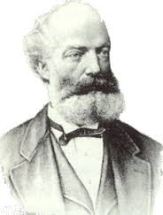

FRIEDRICH KEKULE

Introduction
Friedrich Kekulé was one of the prominent names in the field of theoretical chemistry in Europe, in the later half of the 18th century. He was the founder of the theory of chemical structure. He also deduced the tetravalence of carbon and the structure of benzene.
About Kekulé
Kekulé was born on 7 September 1829 in Darmstadt, Grand Duchy of Hesse.Kekulé never used his first given name; he was known throughout his life as August Kekulé. After he was ennobled by the Kaiser in 1895, he adopted the name August Kekule von Stradonitz, without the French acute accent over the second "e".The French accent had apparently been added to the name by Kekulé's father during the Napoleonic occupation of Hesse by France, in order to ensure that French speakers pronounced the third syllable.
After graduating from secondary school, in 1847 he entered the University of Giessen, with the intention of studying architecture. After hearing the lectures of Justus von Liebig he decided to study chemistry.
Kekulé's Work
Kekulé's most famous work was on the structure of benzene. In 1865 Kekulé published a paper in French (for he was then still in Francophone Belgium) suggesting that the structure contained a six-membered ring of carbon atoms with alternating single and double bonds. The next year he published a much longer paper in German on the same subject. The empirical formula for benzene had been long known, but its highly unsaturated structure was a challenge to determine.
Kekulé argued for his proposed structure by considering the number of isomers observed for derivatives of benzene. For every monoderivative of benzene (C6H5X, where X = Cl, OH, CH3, NH2, etc.) only one isomer was ever found, implying that all six carbons are equivalent, so that substitution on any carbon gives only a single possible product. For diderivatives such as the toluidines, C6H4(NH2)(CH3), three isomers were observed, for which Kekulé proposed structures with the two substituted carbon atoms separated by one, two and three carbon-carbon bonds, later named ortho, meta, and para isomers respectively.
Kekulé was the principal formulator of the theory of chemical structure (1857–58). This theory proceeds from the idea of atomic valence, especially the tetravalence of carbon (which Kekulé announced late in 1857)[1] and the ability of carbon atoms to link to each other (announced in a paper published in May 1858), to the determination of the bonding order of all of the atoms in a molecule. Archibald Scott Couper independently arrived at the idea of self-linking of carbon atoms (his paper appeared in June 1858), and provided the first molecular formulas where lines symbolize bonds connecting the atoms.
For organic chemists, the theory of structure provided dramatic new clarity of understanding, and a reliable guide to both analytic and especially synthetic work. As a consequence, the field of organic chemistry developed explosively from this point.
Of the first five Nobel Prizes in Chemistry, Kekulé's students won three: van 't Hoff in 1901, Fischer in 1902 and Baeyer in 1905.